継続は力なり
Keizoku wa chikara nari — “Consistency is strength.”
Four lift days built around your parkrun and long run — legs twice a week, full-body variety, plus skipping and dead hangs worked in throughout.パークランと週半ばのロングランを軸にした、週4回の筋トレプラン。脚のトレーニングを週2回、全身をバランスよく鍛え、縄跳びとデッドハングも取り入れています。
Warm-up: 5 min easy bike or row, then 2 min light skipping + walking lunges and hip circles.ウォームアップ: バイクかローイングを5分、その後縄跳びを2分軽く+ウォーキングランジとヒップサークル。
| Exercise種目 | Sets × Repsセット×回数 | Rest休憩 | Notesメモ | ||
|---|---|---|---|---|---|
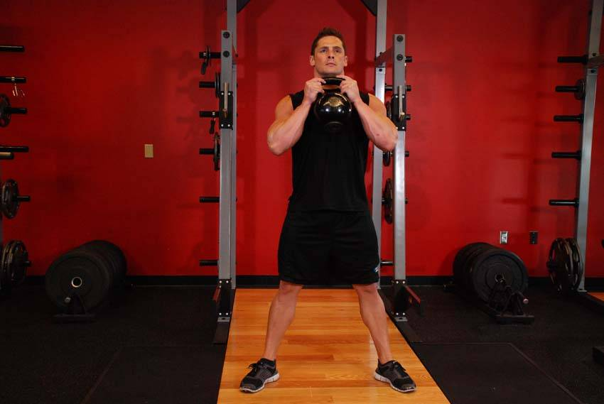 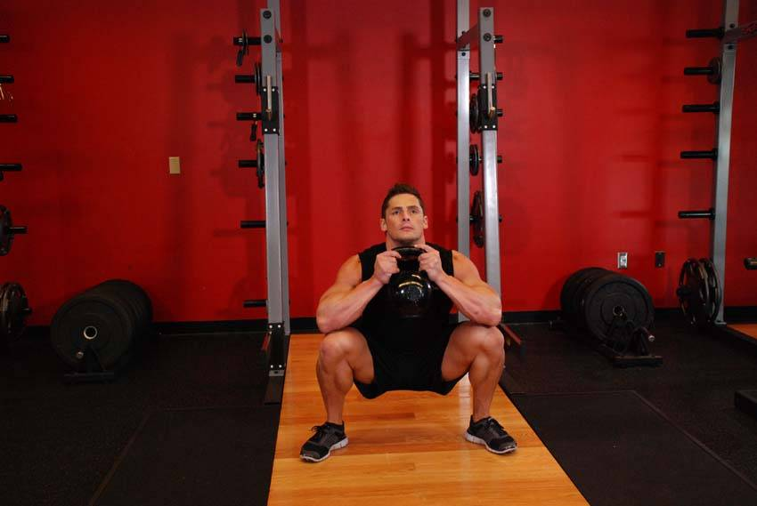 |
Goblet squat (dumbbell)ゴブレットスクワット（ダンベル） | 4 × 8–104セット × 8〜10回 | 90s90秒 | Chase depth and control before adding load重量を上げる前に、深さとコントロールを優先 | |
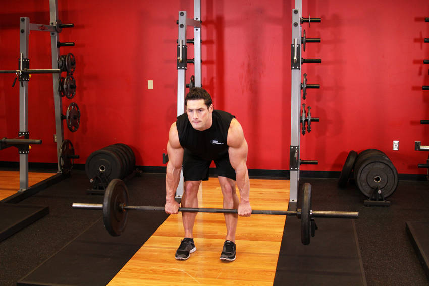 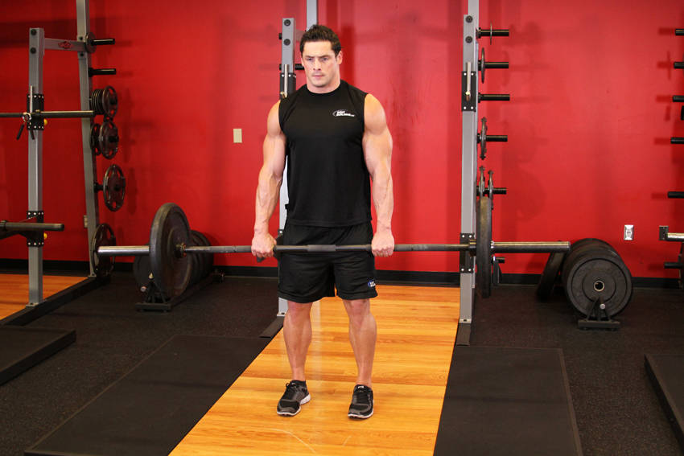 |
Dumbbell Romanian deadliftダンベル・ルーマニアンデッドリフト | 4 × 10–124セット × 10〜12回 | 90s90秒 | Soft knees, push hips back, feel hamstrings stretch膝は軽く曲げ、お尻を後ろに引いてハムストリングスを伸ばす | |
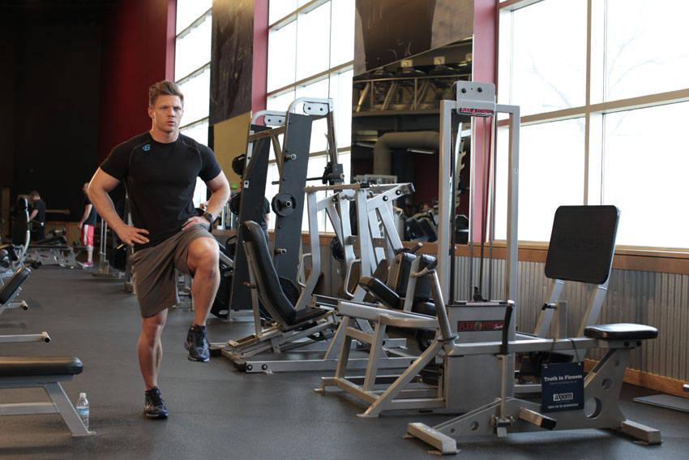 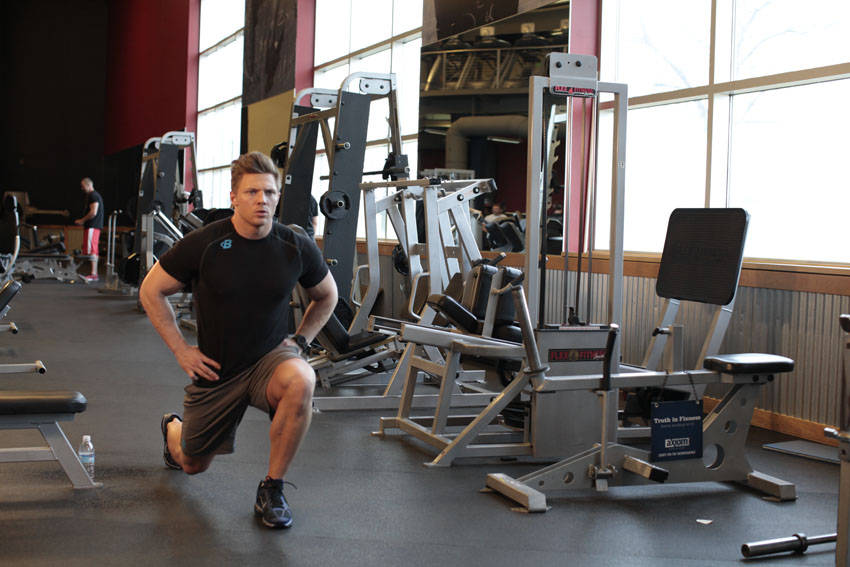 |
Walking lunges (dumbbells)ウォーキングランジ（ダンベル） | 3 × 12/leg3セット × 片脚12回 | 60s60秒 | Long stride, back knee grazes floor歩幅を大きく、後ろ膝は床すれすれまで | |
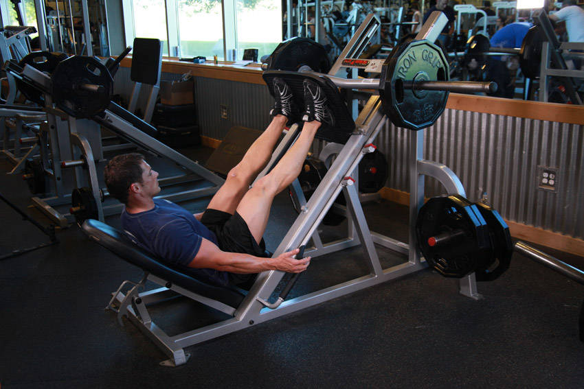 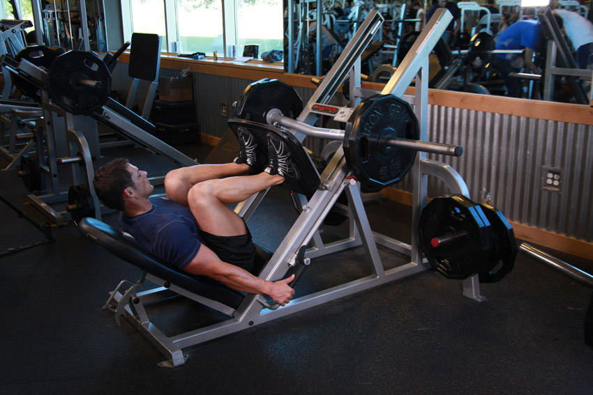 |
Leg pressレッグプレス | 3 × 12–153セット × 12〜15回 | 75s75秒 | Feet mid-platform for balanced quad/glute work足はプレートの中央に置き、大腿四頭筋とお尻に均等に効かせる | |
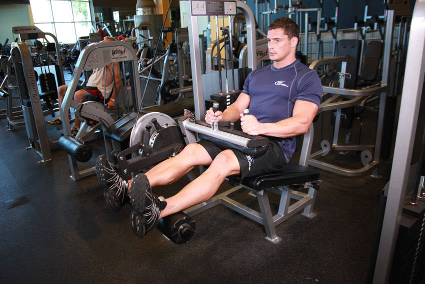 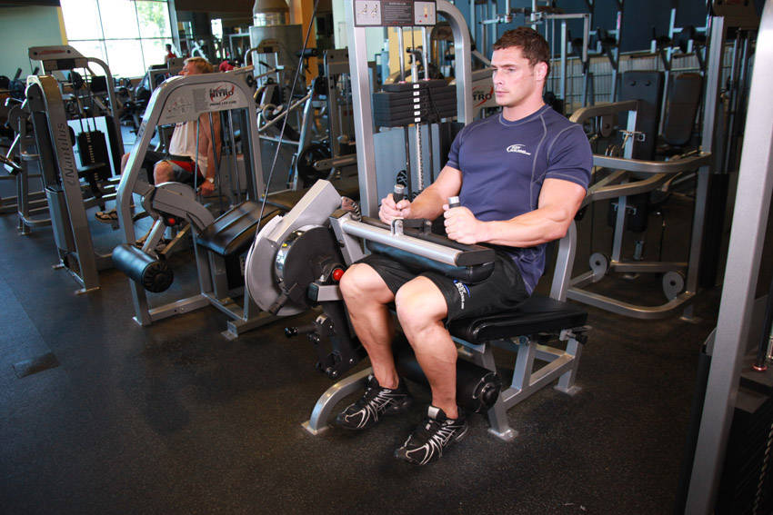 |
Seated leg curlシーテッドレッグカール | 3 × 12–153セット × 12〜15回 | 60s60秒 | Slow on the way back — 3 second lower戻す動作はゆっくり、3秒かけて下ろす | |
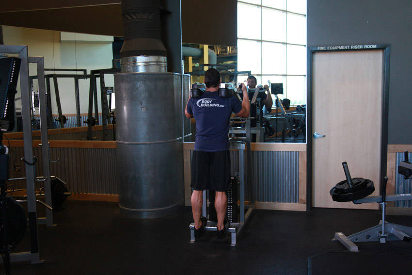 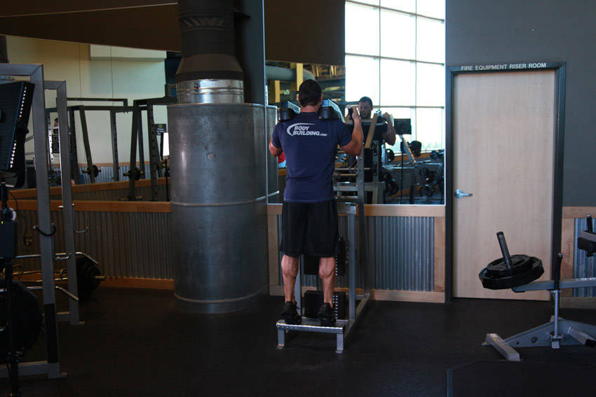 |
Standing calf raiseスタンディングカーフレイズ | 3 × 15–203セット × 15〜20回 | 45s45秒 | Pause at the topトップで一瞬止める | |
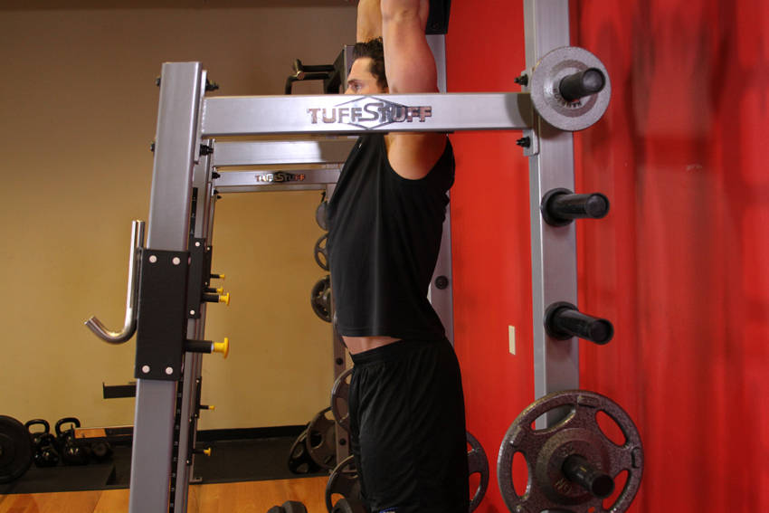 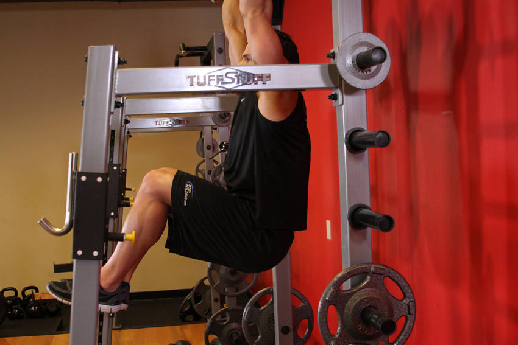 |
Hanging knee raiseハンギングニーレイズ | 3 × 10–123セット × 10〜12回 | 45s45秒 | Swap for plank (3 × 30s) if grip fatigues first握力が先に限界になる場合はプランク（3×30秒）に置き換え |
Finish with 3 rounds of a dead hang, 20–40 seconds each, resting a minute between. Shoulders relaxed and slightly engaged (not shrugged to your ears). This is loosening up your lats and grip after all the leg work — it doesn't need to be exhausting.仕上げにデッドハングを3セット（各20〜40秒）、セット間は1分休憩します。肩はすくめず、軽く締めた状態をキープ。脚のトレーニングのあとに広背筋と握力をほぐすための種目なので、無理に追い込まなくて大丈夫です。
Warm-up: 5 min skipping (easy pace) + band pull-aparts and arm circles.ウォームアップ: 縄跳びを5分（ゆっくり）+バンドプルアパートと腕回し。
| Exercise種目 | Sets × Repsセット×回数 | Rest休憩 | Notesメモ | ||
|---|---|---|---|---|---|
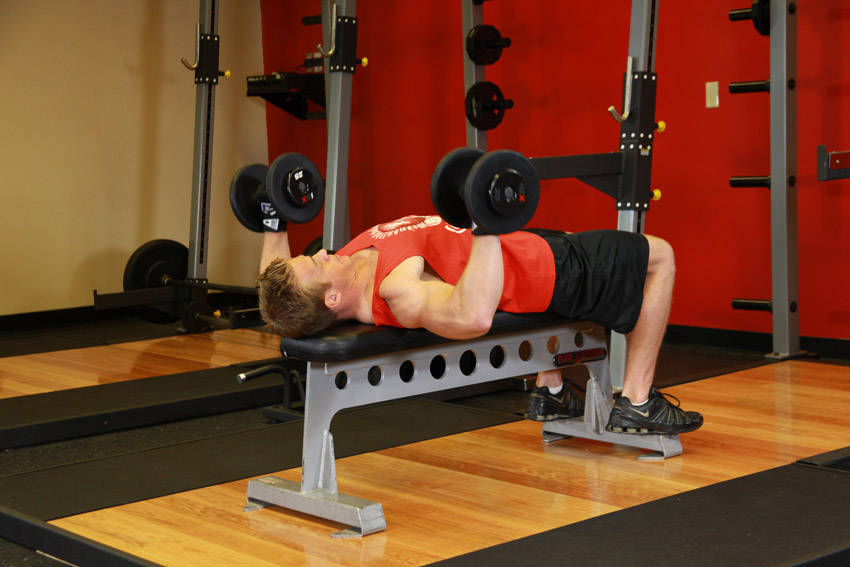 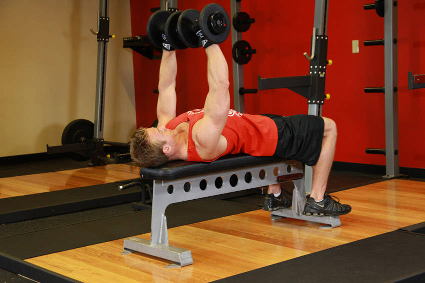 |
Flat dumbbell bench pressフラットダンベルベンチプレス | 3 × 10–123セット × 10〜12回 | 90s90秒 | Bar path in a slight arc, elbows ~45°軌道はやや弧を描くように、肘の角度は約45度 | |
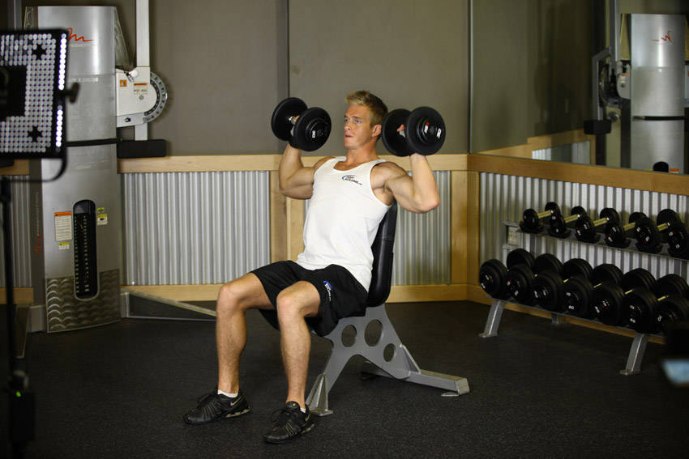 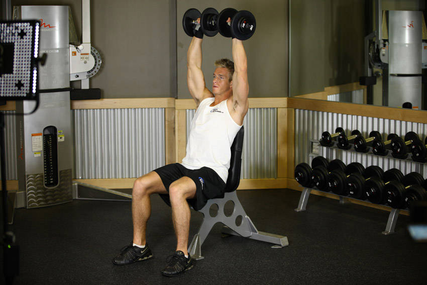 |
Seated dumbbell shoulder pressシーテッドダンベルショルダープレス | 3 × 10–123セット × 10〜12回 | 75s75秒 | Ribs down, don't overarch the back肋骨を締めて、腰を反りすぎない | |
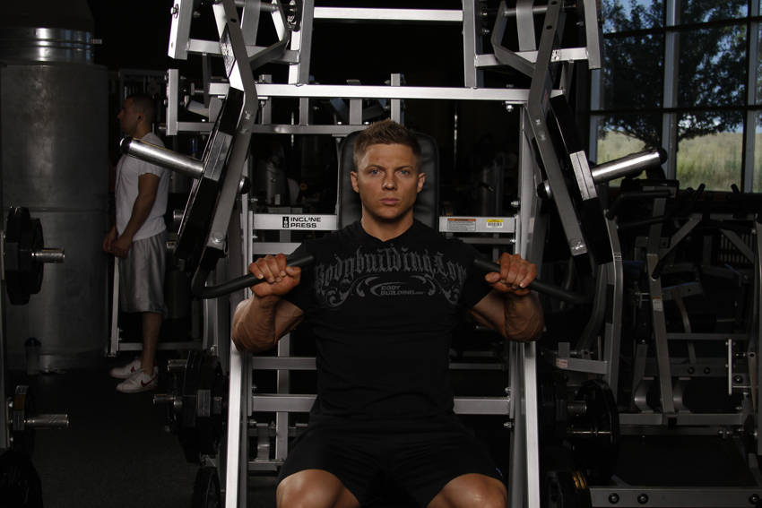 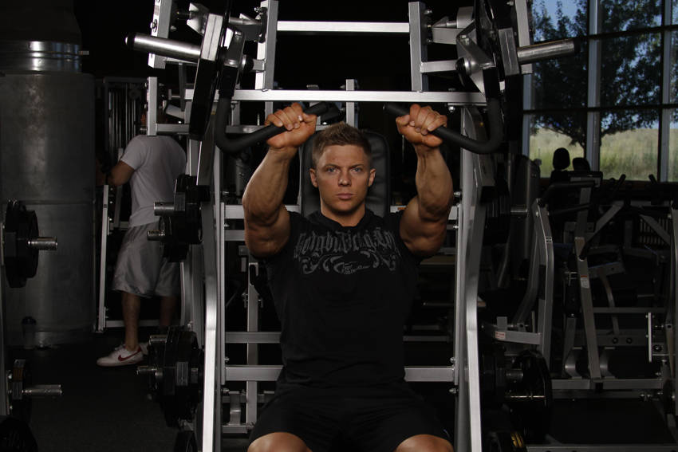 |
Incline machine chest pressインクラインマシンチェストプレス | 3 × 10–123セット × 10〜12回 | 75s75秒 | Targets upper chest — pairs with flat press胸上部を狙う種目。フラットプレスと組み合わせる | |
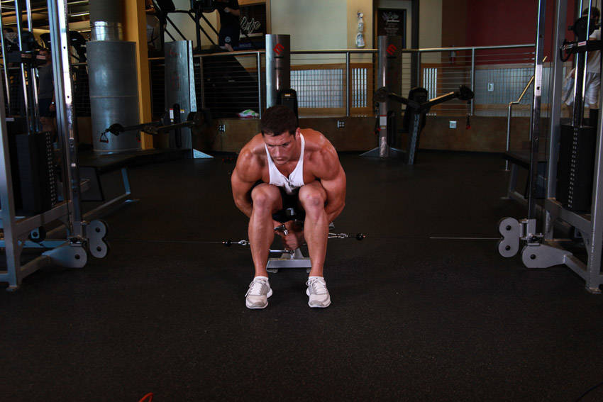 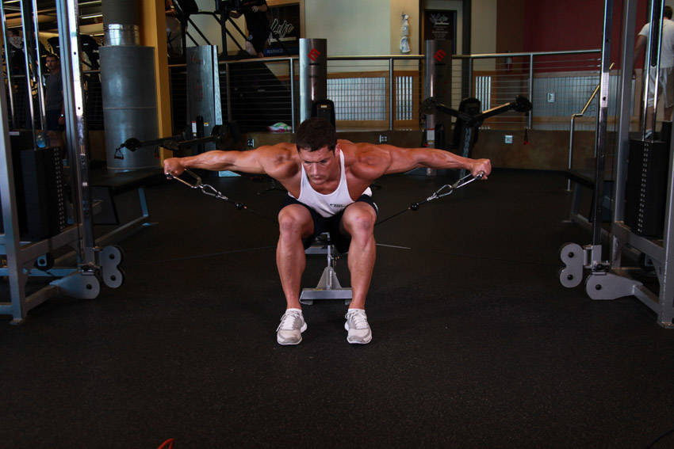 |
Cable lateral raiseケーブルラテラルレイズ | 3 × 12–153セット × 12〜15回 | 45s45秒 | Lead with elbows, stop at shoulder height肘から動かし、肩の高さで止める | |
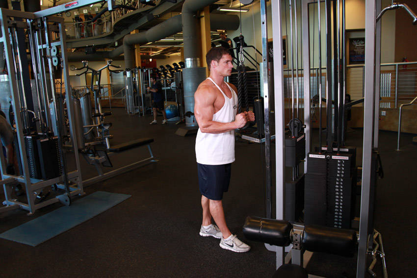 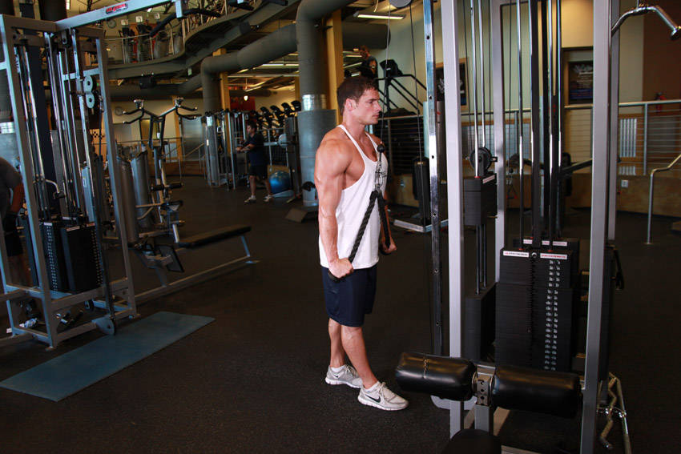 |
Triceps rope pushdownケーブルトライセプスプッシュダウン（ロープ） | 3 × 12–153セット × 12〜15回 | 45s45秒 | Elbows pinned to your sides肘を体側に固定する | |
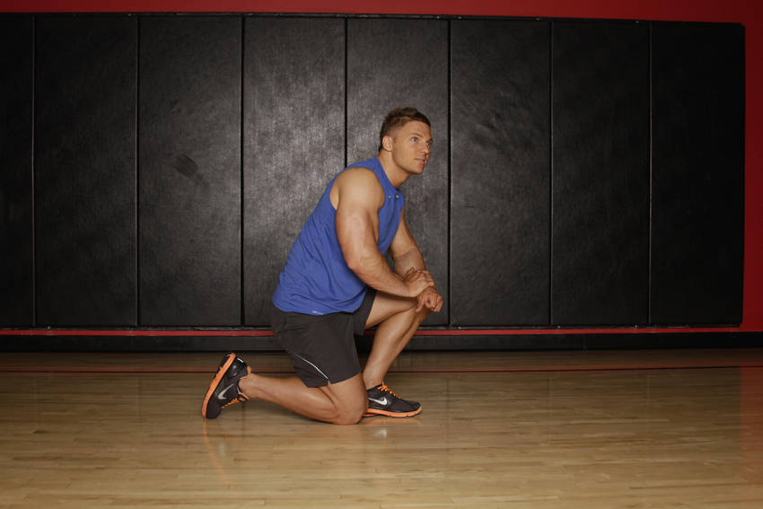 |
Plankプランク | 3 × 30–40s3セット × 30〜40秒 | 30s30秒 | Brace the core, don't let hips sag体幹を締めて、腰が落ちないように | |
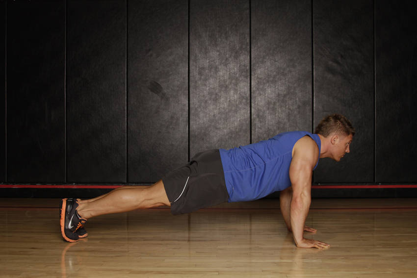 |
Side plankサイドプランク | 3 × 30–40s3セット × 30〜40秒 | 30s30秒 | Stack hips and shoulders, keep hips lifted肩と腰を一直線に、腰を落とさない |
This is your longer steady run — keep it conversational pace, not a race effort. It's doing the aerobic-base job the gym days aren't. No lifting today; a 5-minute walk and light stretching afterwards is plenty. Skip this if legs are still trashed from Thursday's session and swap in an easy walk instead — one missed long run won't undo anything.今週でいちばん長く走る日です。会話ができるくらいのペースを守り、レース気分で追い込まないこと。ジムの日では鍛えられない有酸素の土台づくりが目的です。今日は筋トレなし。走った後は5分のウォーキングと軽いストレッチで十分。前日の疲労で脚が回復していなければ、無理せず軽いウォーキングに置き換えてOK。1回休んでも、これまでの成果がなくなることはありません。
Warm-up: 5 min skipping + banded lateral walks to switch glutes on.ウォームアップ: 縄跳びを5分+バンドラテラルウォークでお尻を目覚めさせる。
| Exercise種目 | Sets × Repsセット×回数 | Rest休憩 | Notesメモ | ||
|---|---|---|---|---|---|
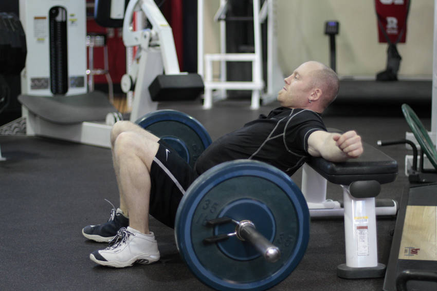 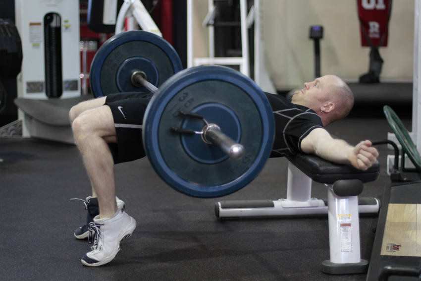 |
Barbell hip thrustバーベルヒップスラスト | 4 × 12–154セット × 12〜15回 | 90s90秒 | Pad on the hips, chin tucked, squeeze glutes at the topパッドを腰に当て、あごを引き、トップでお尻をしっかり締める | |
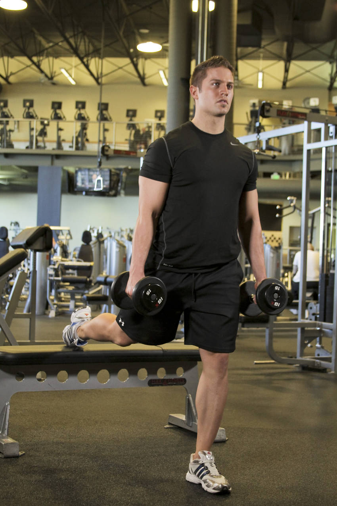 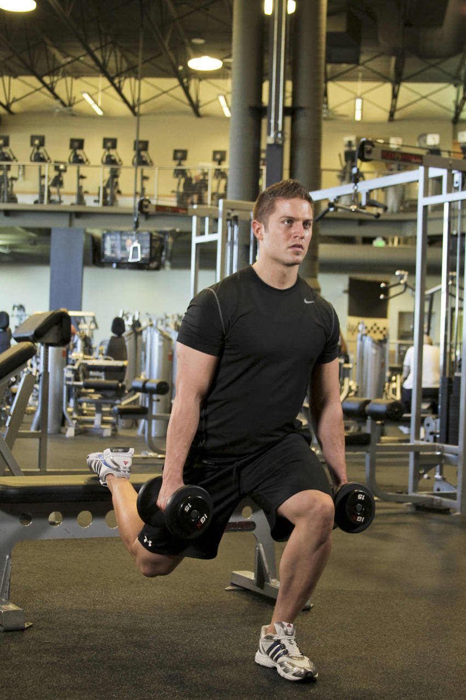 |
Bulgarian split squat (dumbbells)ブルガリアンスプリットスクワット（ダンベル） | 3 × 10–12/leg3セット × 片脚10〜12回 | 75s75秒 | Back foot on bench, torso stays upright後ろ足をベンチに乗せ、上体はまっすぐに保つ | |
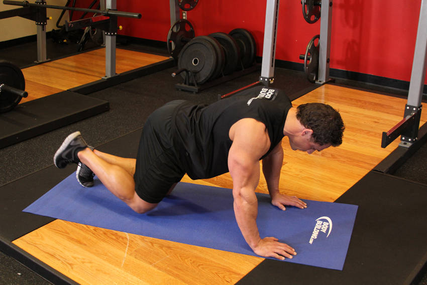 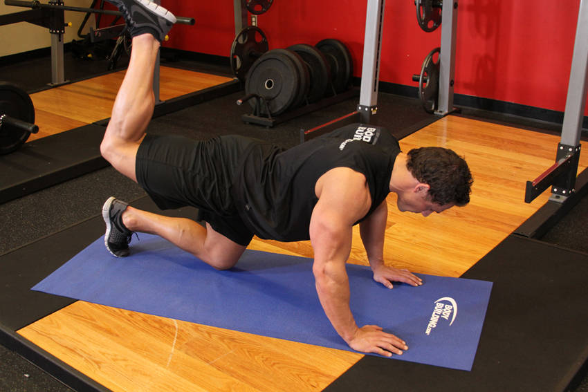 |
Cable glute kickbackケーブルグルートキックバック | 3 × 15/leg3セット × 片脚15回 | 45s45秒 | Small controlled range, don't swing反動を使わず、小さく丁寧に動かす | |
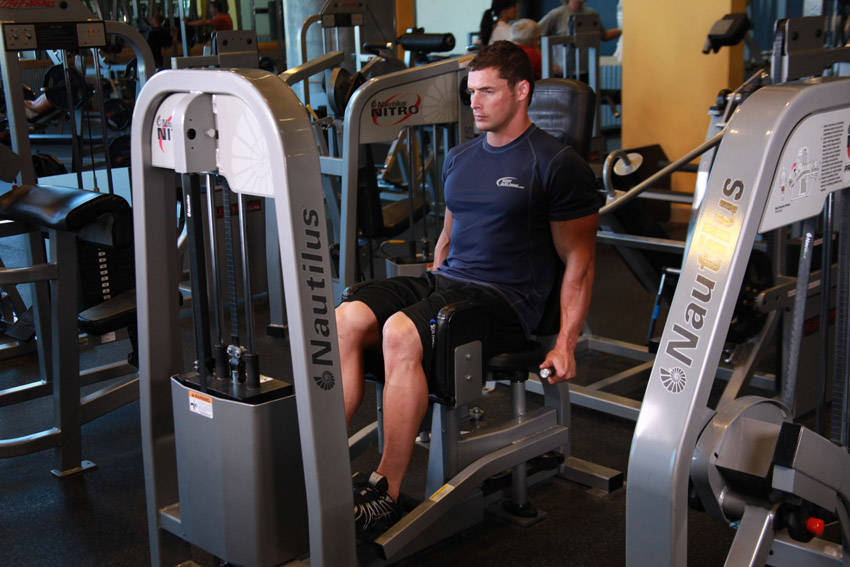 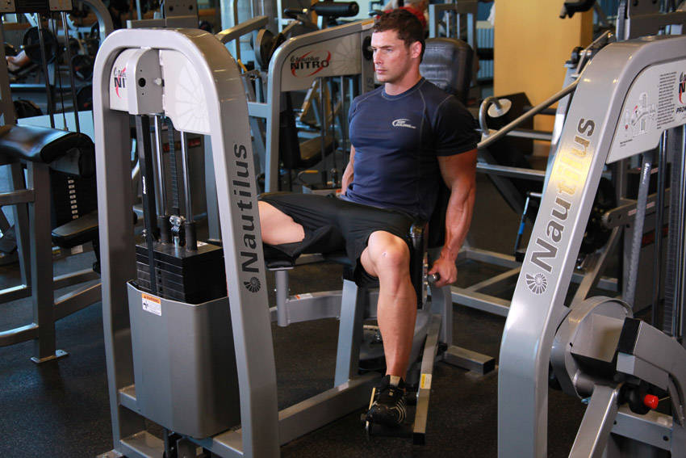 |
Hip abduction machineヒップアブダクションマシン | 3 × 15–203セット × 15〜20回 | 45s45秒 | Lean slightly forward to bias glute mediusやや前傾すると中臀筋に効きやすい | |
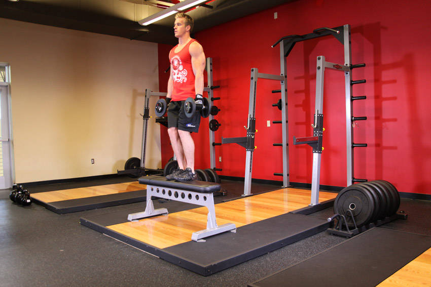 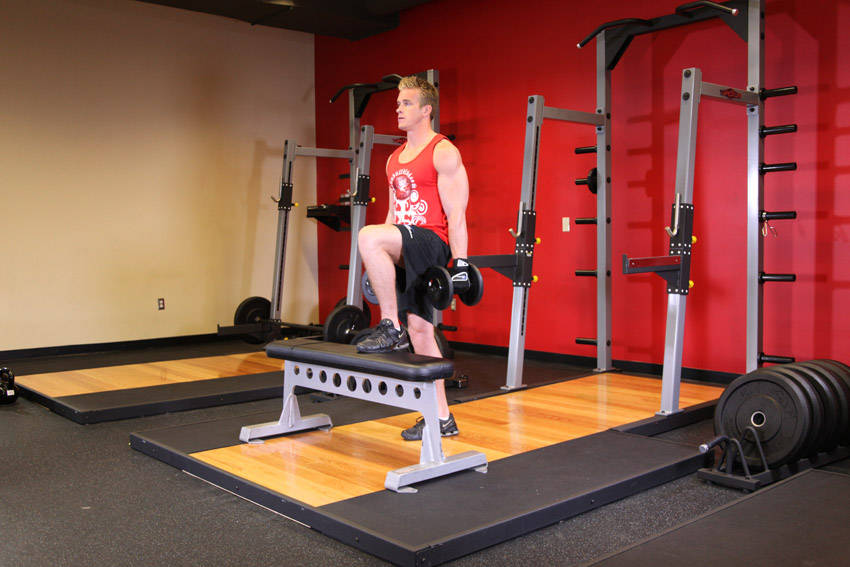 |
Dumbbell step-upsダンベルステップアップ | 3 × 10/leg3セット × 片脚10回 | 60s60秒 | Drive through the heel of the top foot上に乗せた足のかかとで踏み込む |
Close with 6 rounds of 30 seconds skipping / 30 seconds rest. Alternate basic bounce and high-knees each round for variety — it's a nice change of pace from lifting and adds a real conditioning hit on top of the leg volume.仕上げに縄跳びを30秒×休憩30秒を6セット。基本の跳び方とハイニーを交互に行うと変化がついて楽しめます。筋トレとは違うリズムで、脚の種目に有酸素の刺激をプラスできます。
Warm-up: 5 min row or skip + scapular pulls hanging from the bar.ウォームアップ: ローイングか縄跳びを5分+バーにぶら下がってのスキャプラプル。
| Exercise種目 | Sets × Repsセット×回数 | Rest休憩 | Notesメモ | ||
|---|---|---|---|---|---|
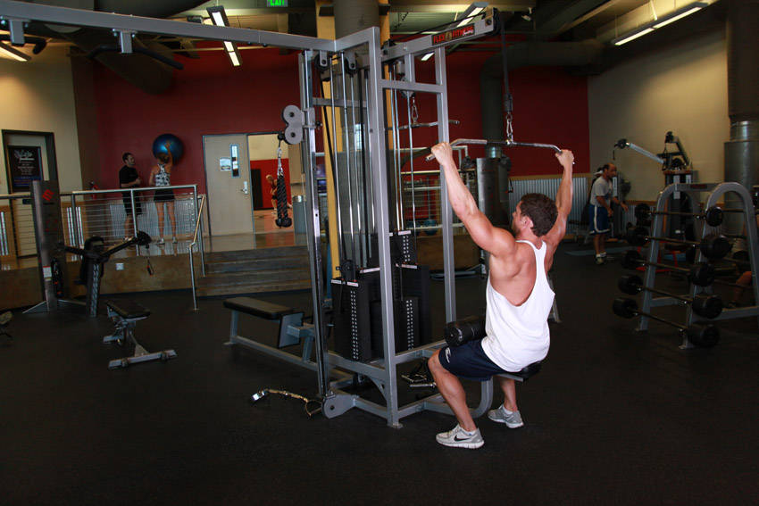 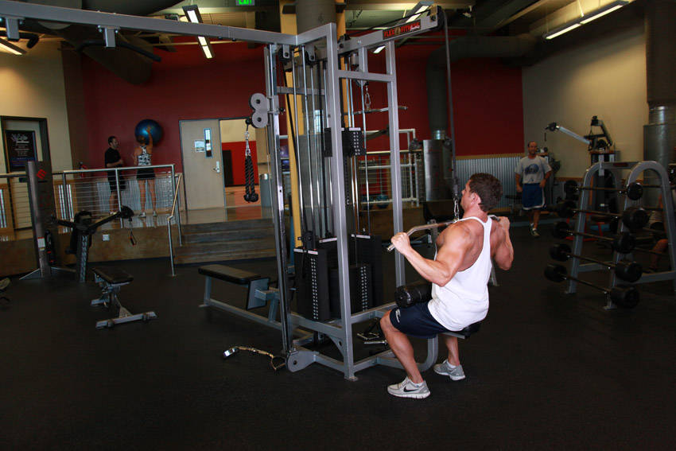 |
Lat pulldownラットプルダウン | 3 × 10–123セット × 10〜12回 | 90s90秒 | Pull to upper chest, chest proud胸の上部に引き、胸を張る | |
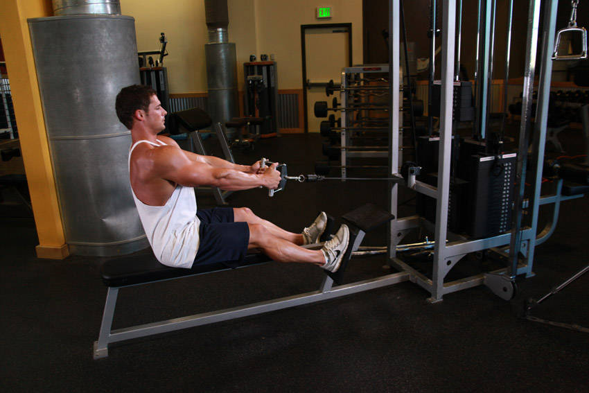 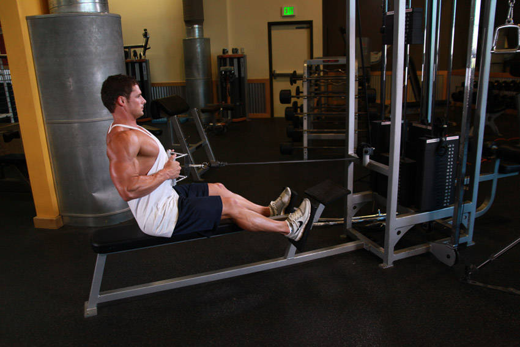 |
Seated cable rowシーテッドケーブルロー | 3 × 10–123セット × 10〜12回 | 75s75秒 | Squeeze shoulder blades, don't lean back excessively肩甲骨を寄せる。後ろに反りすぎない | |
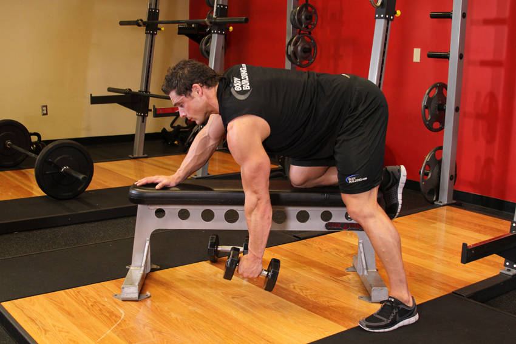 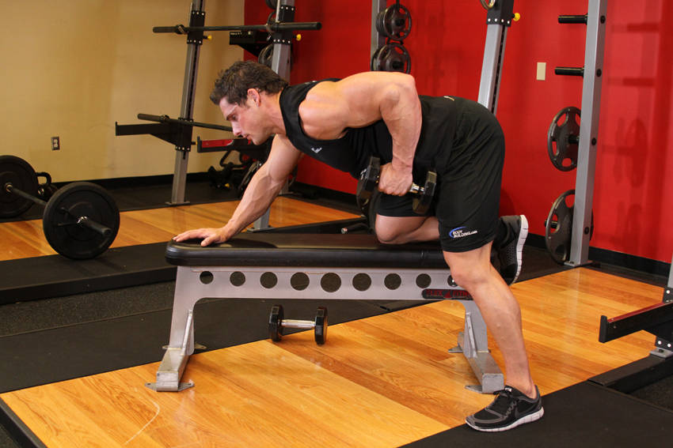 |
Single-arm dumbbell rowシングルアームダンベルロー | 3 × 10–12/side3セット × 片側10〜12回 | 60s60秒 | Flat back, pull elbow toward hip背中をまっすぐに、肘を腰に引き寄せる | |
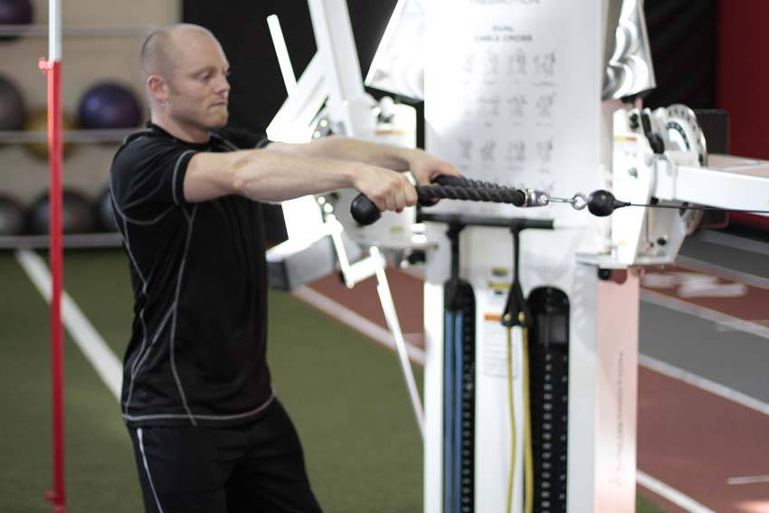 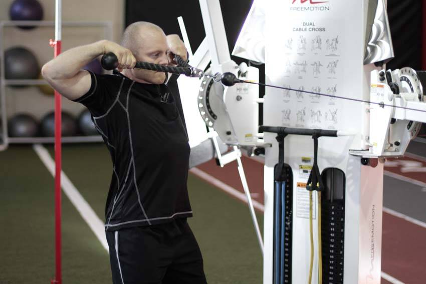 |
Face pullフェイスプル | 3 × 153セット × 15回 | 45s45秒 | Great for posture — pull to eye level姿勢改善に効果的。目の高さまで引く | |
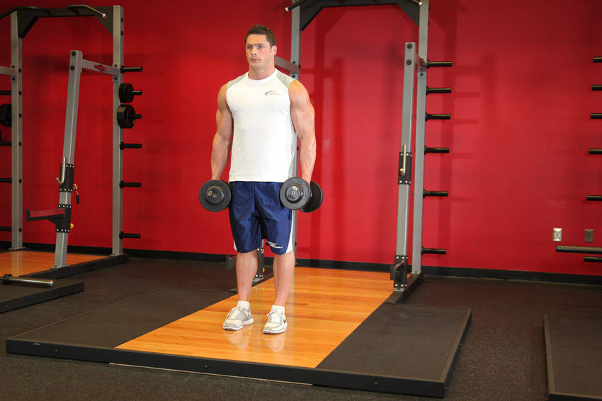 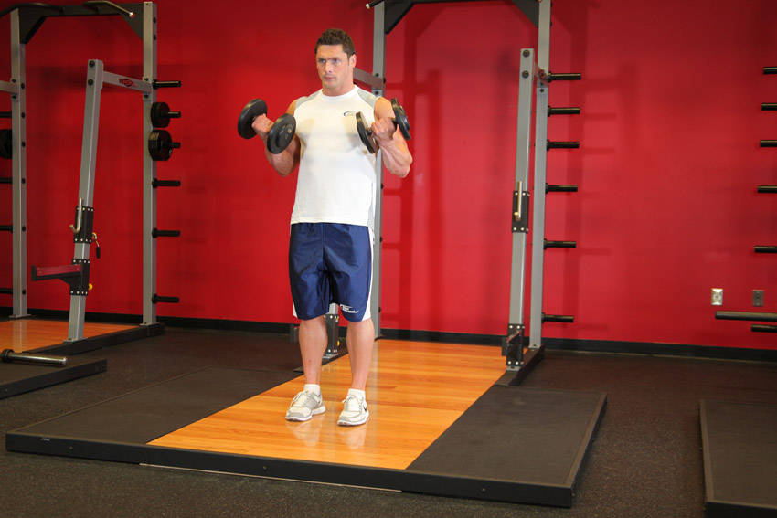 |
Dumbbell bicep curlダンベルバイセップカール | 3 × 123セット × 12回 | 45s45秒 | No swinging, full stretch at the bottom反動を使わず、下でしっかり伸ばす | |
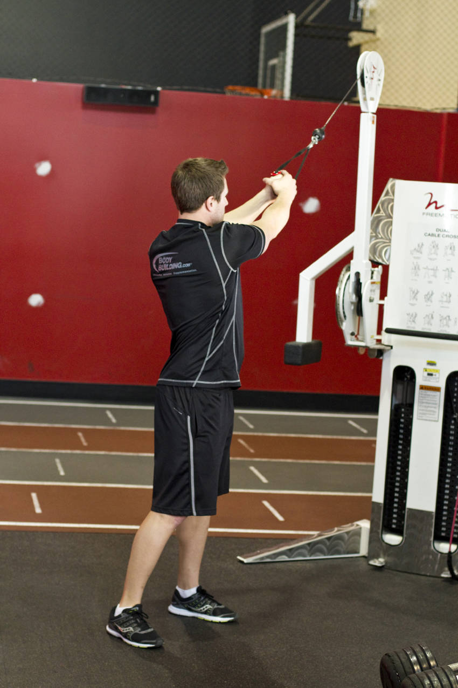 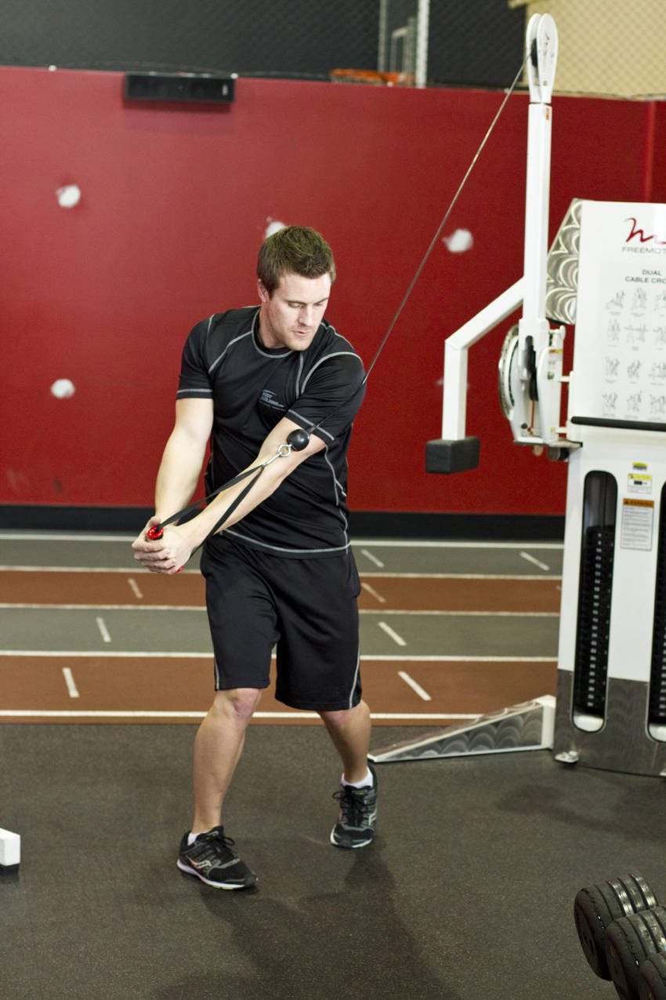 |
Cable woodchopperケーブルウッドチョッパー | 3 × 15/side3セット × 片側15回 | 45s45秒 | Rotate from the ribs, not just the arms腕だけでなく、みぞおちから回旋する |
Finish with 4 rounds building toward a 40–60 second dead hang. This is your main grip-and-shoulder-health day for it — over a few weeks the hang time should climb, which is the whole point. Chalk or straps are fine once grip becomes the limiter before your shoulders do.仕上げにデッドハングを4セット、40〜60秒を目標に伸ばしていきます。この日がメインの握力・肩ケアの種目なので、数週間かけてぶら下がれる時間が伸びればOK。肩より先に握力がきつくなってきたら、チョークやストラップを使っても構いません。
Run it however you're feeling that week — easy, steady, or a push if legs are fresh. It doubles as your weekly benchmark; no need to chase a time every single week.その週の調子に合わせて走ればOK。楽に、着実に、脚が元気なら少し追い込んでも構いません。毎週のタイムを更新しようと気負う必要はなく、週ごとの目安として使うくらいで十分です。
Take this fully off most weeks. When you want a 5th session, run this light full-body conditioning circuit instead of a fifth heavy lift — it keeps the “4–5 times a week” without stacking fatigue on top of two run days.ほとんどの週はしっかり休んでOKです。5回目のトレーニングをしたい週は、重い種目を追加するのではなく、この軽めの全身コンディショニングサーキットを。ランの日を2日抱えたまま疲労を溜めずに「週4〜5回」を実現できます。
| Exercise種目 | Sets × Repsセット×回数 | Rest休憩 | Notesメモ | ||
|---|---|---|---|---|---|
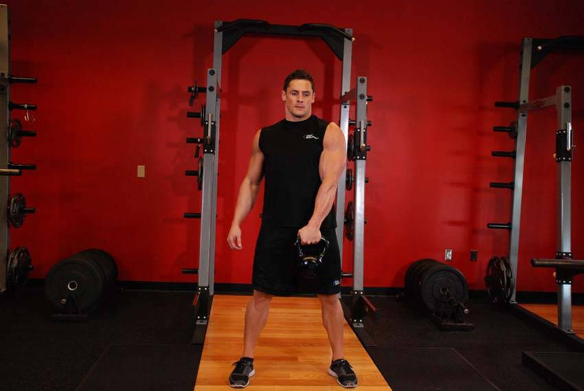 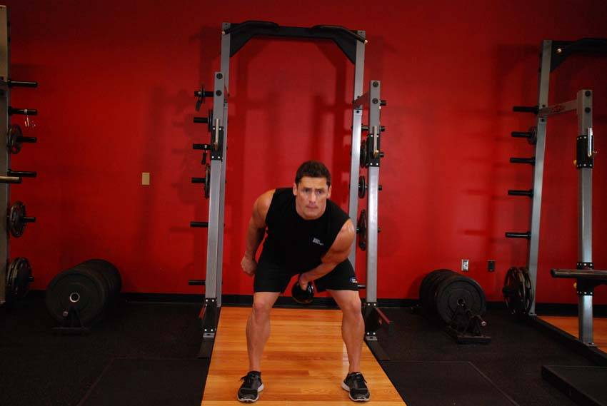 |
Kettlebell swingケトルベルスイング | 3 × 153セット × 15回 | 30s30秒 | Hip hinge, not a squatスクワットではなくヒップヒンジの動き | |
| Goblet squatゴブレットスクワット | 3 × 123セット × 12回 | 30s30秒 | Lighter than Monday — this is a shake-out月曜日より軽めに。軽く体を動かす程度でOK | ||
| Push-upsプッシュアップ | 3 × 10–153セット × 10〜15回 | 30s30秒 | Knees down is a full rep too膝をついても1回としてカウントしてOK | ||
| Skipping縄跳び | 3 × 1 min3セット × 1分 | 30s30秒 | Freestyle — mix footwork patterns自由に、いろいろなステップを混ぜて | ||
| Dead hangデッドハング | 3 × max3セット × 限界まで | 45s45秒 | However long today has in it今日出せる分だけでOK |